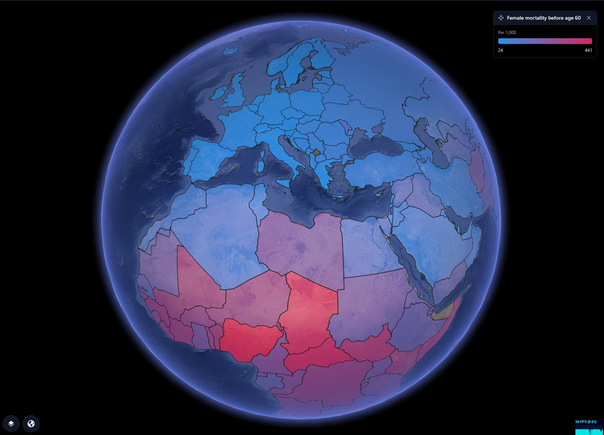
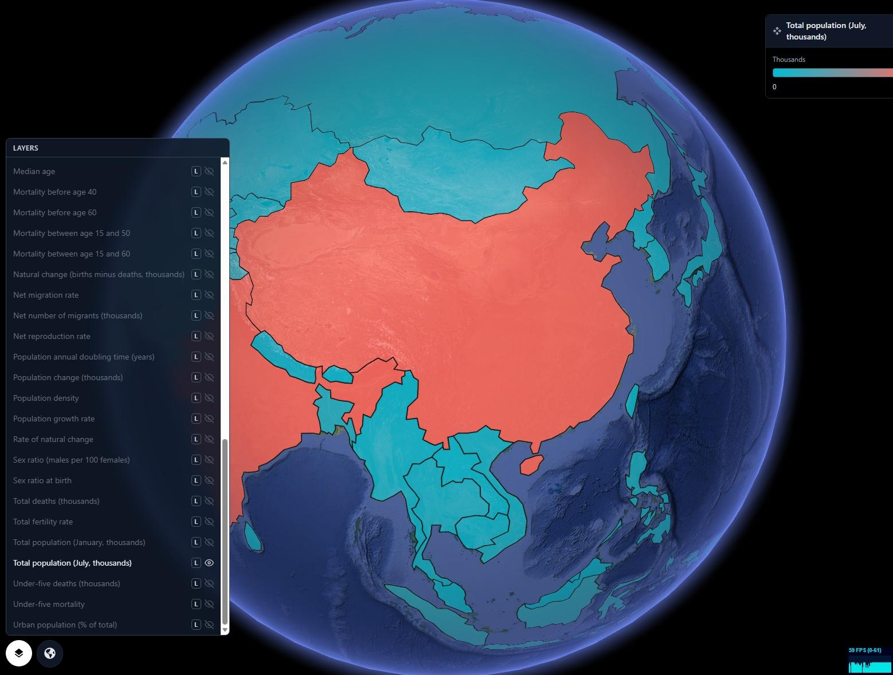
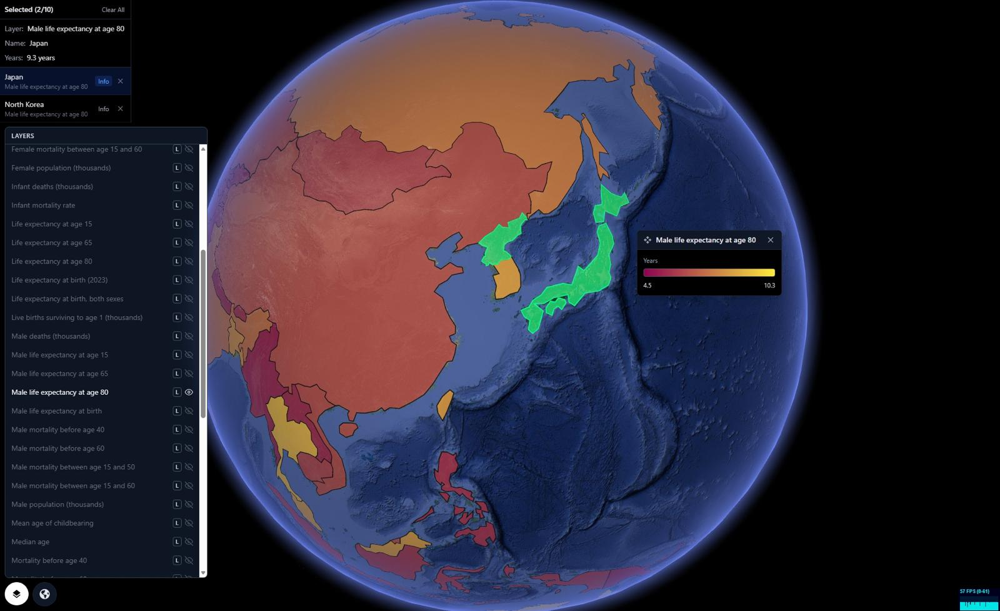
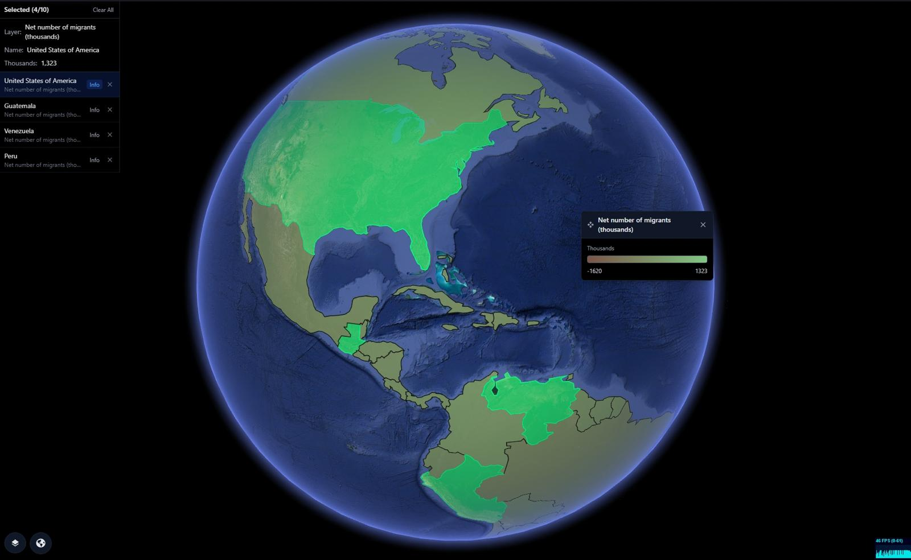

Global Population & Demographics
Visualize birth rates, mortality, life expectancy, migration flows, and population density on a live 3D globe — to understand where humanity is growing, aging, moving, and changing.
GRIP 3D brings the full spectrum of global demographic data into one live visual layer — births, deaths, fertility, life expectancy by age and sex, migration flows, population density, and urban growth all rendered on a single interactive globe. Teams can drill from a global population heatmap into country-level trends, toggle between male and female mortality layers, compare life expectancy across regions, and overlay net migration against natural population change. Built for researchers, policy teams, telecom planners, health organizations, and enterprise analysts who need demographic intelligence that moves as fast as the world does.

Demographic datasets are large, multi-dimensional, and geographically fragmented. Understanding the relationship between birth rates, mortality, and migration across 195 countries requires spatial context that spreadsheets simply cannot provide.
- Population data lives in UN, World Bank, and national silos
- No spatial view of how birth, death, and migration interact
- Flat choropleth maps lose the curvature and scale of real geography
- Analysts spend hours building charts that miss the global picture
GRIP 3D maps 46 demographic layers onto one live 3D Earth — enabling teams to toggle signals, compare geographies, and surface relationships between datasets that no dashboard or flat map could reveal.
- 46 demographic layers, all toggleable on a single globe
- Drill from global heatmap to country and city granularity
- Side-by-side layer comparison across regions and time
- One shared visual for research, policy, health, and planning teams
Why this works at global scale
Capabilities
- 46 demographic layers toggleable on a single live 3D globe
- Heatmaps for population density, mortality, and fertility by geography
- Drill-down from global view to country, region, and city granularity
- Side-by-side layer comparison — stack birth rate over net migration over life expectancy
- Male vs. female demographic split across mortality, life expectancy, and population layers
- APIs for ingesting UN, World Bank, and custom population data sources
- Partner-ready layer publishing for health organizations, governments, and research institutions
Demographic Layers
Platform Views



Open for consulting and partner integrations
If you want this use case mapped to your data sources, we can deliver a fast prototype and integration plan — including layers, APIs, and deployment options.